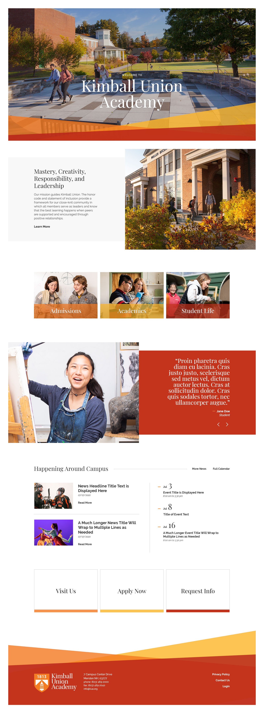
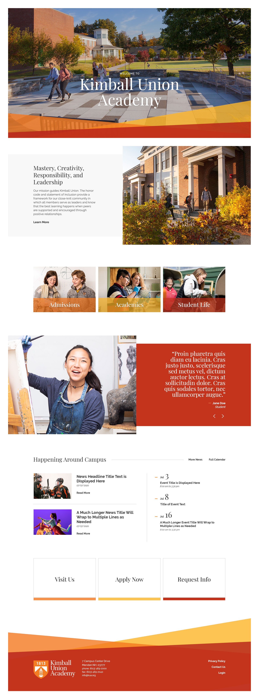

KUA's new homepage borrows the modern and clean aesthetic from not just St. Paul's but from other similar sites, however giving you just that and calling it a day wouldn't be enough. While SPS has a deceptively simple aesthetic, I have it on good authority that managing the site is anything but simple. Additionally I wanted to incorporate some other modern twists, as well as some of the branding that was provided to give KUA a fresh look that is both easy to manage behind the scenes as it is beautiful to the end user.
for starters, I've put the entire site within a white frame. This serves to not just differentiate the site from other schools, but also adds a bit of a sophisticated feel to the site that lets the visitor know there's a premium "product" being highlighted here. The aesthetics are also kept simple and clean, with an emphasis on the content itself rather than any sort of distracting design language. I've incorporated the angled shapes and the provided colors, with some minor tweaks to the former to bring an overall warmth to the design as well.